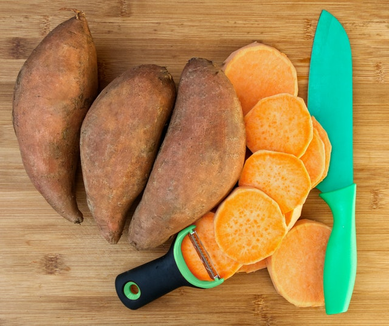

Back to Home
Grandma Tolli's Candied Yams

Description
By: ntolliver213
My grandma's candied yams are the best candied yams I have ever had! The pineapple is an awesome addition to this sweet dish.
Ingredients
- 1/4 cup unsalted butter
- 1/4 cup pineapple juice
- 1/2 cup white sugar
- 1/2 cup brown sugar
- 1 teaspoon ground cinnamon
- 1/2 teaspoon ground nutmeg
- 2 (29 oz) cans cut yams, drained
- 1 8oz can pineapple chunks, drained
- 1 1/2 cups miniature marshmellows
Instructions
-
Preheat the oven to 350 degrees F (175 degrees C).
-
Melt butter in a saucepan over medium-low heat. Add pineapple juice, white sugar, brown sugar, cinnamon, and nutmeg; stir to combine and cook until sugars have dissolved, 2 to 3 minutes.
-
Meanwhile, place drained yams in a casserole dish. Add pineapple chunks. Pour sauce over top.
-
Bake in the preheated oven for 1 hour. Add marshmallows to the top and continue to bake until golden and melted, 10 to 15 minutes more. Let stand for 15 minutes before serving so sauce can thicken.
Nutrition Facts
- 393 calories
- protein 2.3g
- carbohydrates 83g
- fat 6.3g
- cholesterol 15.3mg
- sodium 106.3mg